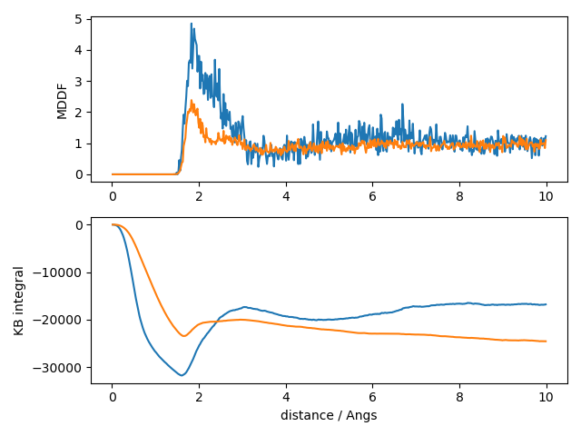
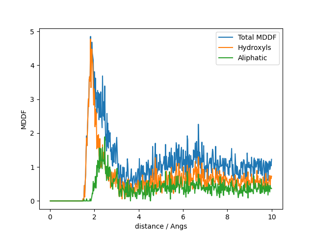

From Python
Most features of the package are available through this Python interface. However, some flexibility may be reduced and, also, the tunning of the plot appearance is left to the user, as it is expected that he/she is fluent with some tools within Python if choosing this interface.
Python 3 or greater is required.
Please report issues, incompatibilities, or any other difficulty in using the package and its interface.
The following examples consider a system composed a protein solvated by a mixture of water and glycerol, built with Packmol. The simulations were performed with NAMD with periodic boundary conditions and a NPT ensemble at room temperature and pressure. Molecular pictures were produced with VMD.

Image of the system of the example: a protein solvated by a mixture of glycerol (green) and water, at a concentration of 50%vv.
Loading the ComplexMixtures.py file
The Python interface of ComplexMixtures is implemented in the ComplexMixtures.py file. Just download it from the link and save it in a known path.
Installing juliacall
juliacall is a package that allows calling Julia programs from Python. Install it with
pip install juliacallInstalling Julia and underlying packages
Once juliacall is installed, from within Python, execute:
import ComplexMixtureshere we assume that the ComplexMixtures.py file is in the same directory where you launched Python.
On the first time you execute this command, the Julia executable and the required Julia packages (ComplexMixtures and PDBTools) will be downloaded and installed. At the end of the process quit Python (not really required, but we prefer to separate the installation from the use of the module).
Example
Index
- Data, packages, and execution
- Minimum-Distance Distribution function
- MDDF and KB integrals
- Atomic contributions to the MDDF
Data, packages, and execution
The files required to run this example are:
- system.pdb: The PDB file of the complete system.
- glyc50_sample.dcd: A 30Mb sample trajectory file. The full trajectory can also be used, but it is a 1GB file.
To start, create a directory and copy the ComplexMixtures.py file to it. Navigate into this directory, and, to start, set the number of threads that Julia will use, to run the calculations in parallel. Typically, in bash, this means defining teh following environment variable:
export JULIA_NUM_THREADS=8where 8 is the number of CPU cores available in your computer. For further information about Julia multi-threading, and on setting this environment variable in other systems, please read this section of the Julia manual.
Finally, each script can be executed with, for example:
python3 script.pyMinimum-Distance Distribution function
Complete example code: click here!
# The ComplexMixtures.py file is assumed to be in the current
# directory.
# Obtain it from:
# https://m3g.github.io/ComplexMixtures.jl/stable/assets/ComplexMixtures.py
import ComplexMixtures as cm
# Load the pdb file of the system using `PDBTools`:
atoms = cm.readPDB("./system.pdb")
# Create arrays of atoms with the protein and Glycerol atoms,
# using the `select` function of the `PDBTools` package:
protein = cm.select(atoms,"protein")
glyc = cm.select(atoms,"resname GLYC")
water = cm.select(atoms,"water")
# Setup solute and solvent structures, required for computing the MDDF,
# with `AtomSelection` function of the `ComplexMixtures` package:
solute = cm.AtomSelection(protein, nmols=1)
solvent = cm.AtomSelection(glyc, natomspermol=14)
# Read and setup the Trajectory structure required for the computations:
trajectory = cm.Trajectory("./glyc50_sample.dcd", solute, solvent)
# Run the calculation and get results:
results = cm.mddf(trajectory)
# Save the reults to recover them later if required
cm.save(results,"./glyc50.json")
print("Results saved to glyc50.json")
# Compute the water distribution function around the protein:
solvent = cm.AtomSelection(water, natomspermol=3)
trajectory = cm.Trajectory("./glyc50_sample.dcd", solute, solvent)
results = cm.mddf(trajectory)
cm.save(results,"./water.json")
print("Results saved to water.json")Note that the example here follows an identical syntax to the Julia example, except that we qualify the name of the loaded module and implicitly load the PDBTools package.
The script to compute the MDDFs as associated data from within python is, then:
To change the options of the calculation, set the Options structure accordingly and pass it as a parameter to mddf. For example:
options = cm.Options(bulk_range=(8.0, 12.0))
results = cm.mddf(trajectory, options)The complete set of options available is described here.
The trajectory that was loaded was for a toy-example. The complete trajectory is available here, but it is a 3GB file. The same procedure above was performed with that file and produced the results_Glyc50.json file, which is available in the Data directory here. We will continue with this file instead.
MDDF and KB integrals
The following python script will produce the typical MDDF and KB integral plot, for the sample system. The noise in the figures is because the trajectory sample is small.
Complete example code: click here!
import ComplexMixtures as cm
import matplotlib.pyplot as plt
# Load the actual results obtained with the complete simulation:
glyc_results = cm.load("./glyc50.json")
water_results = cm.load("./water.json")
# Plot MDDF and KB
fig, axs = plt.subplots(2)
axs[0].plot(glyc_results.d, glyc_results.mddf, label="Glycerol")
axs[0].plot(water_results.d, water_results.mddf, label="Water")
axs[0].set(ylabel="MDDF")
# Plot KB integral
axs[1].plot(glyc_results.d, glyc_results.kb)
axs[1].plot(water_results.d, water_results.kb)
axs[1].set(xlabel="distance / Angs", ylabel="KB integral")
plt.tight_layout()
plt.savefig("mddf_kb.png")
In the top plot, we see that glycerol and water display clear solvation shells around the protein, with glycerol having a greater peak. This accumulation leads to a greater (less negative) KB integral for glycerol than water, as shown in the second plot. This indicates that the protein is preferentially solvated by glycerol in this system (assuming that sampling is adequate in this small trajectory).
Atomic contributions to the MDDF
The following script produces a plot of the group contributions of Glycerol to the total MDDF function. The Glycerol MDDF is split into the contributions of the hydroxyl and aliphatic groups.
Complete example code: click here!
# Load packages
import ComplexMixtures as cm
import matplotlib.pyplot as plt
# Read the pdb file and set solvent and solute groups
atoms = cm.readPDB("./system.pdb")
protein = cm.select(atoms, "protein")
glyc = cm.select(atoms, "resname GLYC")
# load previously computed MDDF results
results = cm.load("./glyc50.json")
# Select atoms by name
hydroxyls = cm.list(["O1","O2","O3","H1","H2","H3"])
aliphatic = cm.list(["C1","C2","HA","HB","HC","HD"])
# Extract the contributions of the Glycerol hydroxyls and aliphatic groups
hydr_contributions = cm.contributions(results, cm.SolventGroup(hydroxyls))
aliph_contributions = cm.contributions(results, cm.SolventGroup(aliphatic))
# Plot
plt.plot(results.d, results.mddf, label="Total MDDF")
plt.plot(results.d, hydr_contributions, label="Hydroxyls")
plt.plot(results.d, aliph_contributions, label="Aliphatic")
plt.legend()
plt.xlabel("distance / Angs")
plt.ylabel("MDDF")
plt.savefig("group_contributions.png")
Despite the low sampling, it is clear that hydroxyl groups contribute to the greter peak of the distribution, at hydrogen-bonding distances, as expected. The contributions of the aliphatic groups to the MDDF occurs at longer distances, associated to non-specific interactions.
The syntax here diverges from the Julia-only examples by requiring the lists of names to be converted to Julia arrays, which happens by using the cm.list(python_list) function calls.